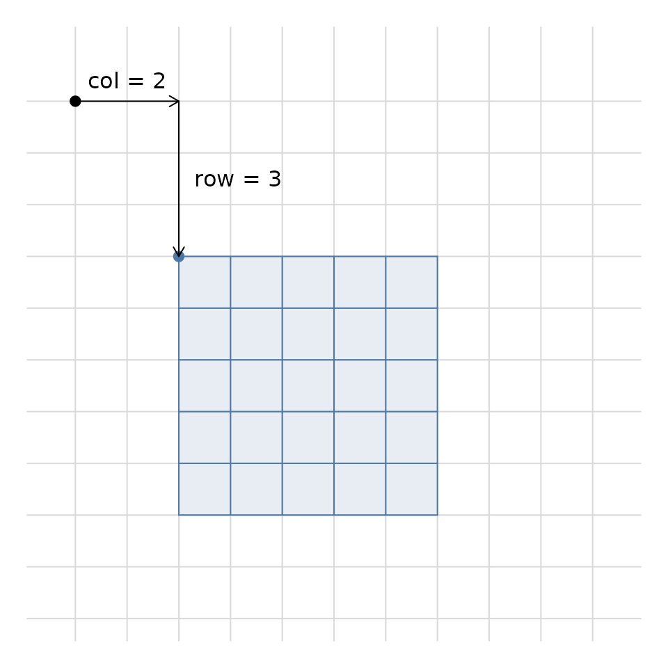

Two kinds of alignment
The vignette("extent-alignment") vignette is about
snapping an arbitrary extent to a grid. This vignette is about
the relationship between two grids: when do their cells line up
well enough that index arithmetic between them is exact?
Two grids share a lattice when their cell boundaries coincide. That requires two things:
- Commensurate resolution - one resolution is an exact integer multiple of the other, in x and in y.
- Matching origin - their origins differ by a whole number of the finer cells.
When both hold, every operation that maps a cell in one grid to a cell in the other (offset, resize, tile, reindex) is exact integer arithmetic: no floating-point negotiation, no half-cell shifts, no off-by-one ambiguity. When they do not hold, the functions here refuse to proceed rather than returning a plausible-looking but wrong answer. The design doc calls this the “alignment prison” - the refusal is the feature.
A single relative tolerance, sqrt(.Machine$double.eps),
is used throughout for the whole-number tests, and is exposed as the
tol argument.
A picture of the lattice
Here a 5x5 child grid sits on the same unit lattice as a 10x10
parent, shifted 2 cells right and 3 cells down. Every child cell
boundary (blue) falls on a parent cell boundary (grey), which is exactly
the condition is_aligned() tests and
grid_offset() measures.
p_dim <- c(10L, 10L); p_ext <- c(0, 10, 0, 10)
c_dim <- c(5L, 5L); c_ext <- c(2, 7, 2, 7)
op <- par(mar = c(1, 1, 1, 1))
plot(NA, xlim = c(0, 10), ylim = c(0, 11), asp = 1,
axes = FALSE, xlab = "", ylab = "")
## parent lattice (origin at top-left: xmin, ymax)
abline(v = x_corner(p_dim, p_ext), h = y_corner(p_dim, p_ext), col = "grey85")
## child cells, drawn as segments clipped to the child extent
cx <- x_corner(c_dim, c_ext); cy <- y_corner(c_dim, c_ext)
rect(c_ext[1], c_ext[3], c_ext[2], c_ext[4], col = "#4C78A822", border = NA)
segments(cx, c_ext[3], cx, c_ext[4], col = "#4C78A8")
segments(c_ext[1], cy, c_ext[2], cy, col = "#4C78A8")
## the offset from the parent top-left to the child top-left
points(0, 10, pch = 19)
points(2, 7, pch = 19, col = "#4C78A8")
arrows(0, 10, 2, 10, length = 0.08)
arrows(2, 10, 2, 7, length = 0.08)
text(1, 10.4, "col = 2")
text(2.3, 8.5, "row = 3", adj = 0)
par(op)
grid_offset(p_dim, p_ext, c_dim, c_ext)
#> col row
#> 2 3is_aligned()
is_aligned() tests the lattice relationship between two
grids. It is symmetric (neither grid is privileged) and the check works
whether the grids are the same resolution, or one is a coarser multiple
of the other.
## same resolution, origins differ by a whole number of cells
is_aligned(c(10L, 10L), c(0, 10, 0, 10), c(5L, 5L), c(2, 7, 2, 7))
#> [1] TRUE
## origin shifted by half a cell: not aligned
is_aligned(c(10L, 10L), c(0, 10, 0, 10), c(5L, 5L), c(2.5, 7.5, 2, 7))
#> [1] FALSE
## a coarser grid on the same lattice (res 5 is a multiple of res 1)
is_aligned(c(10L, 10L), c(0, 10, 0, 10), c(2L, 2L), c(0, 10, 0, 10))
#> [1] TRUEAlignment is not containment. A grid can be perfectly aligned to another and still lie entirely outside it:
## child sits far outside the parent, but on the same lattice
is_aligned(c(10L, 10L), c(0, 10, 0, 10), c(5L, 5L), c(20, 25, 20, 25))
#> [1] TRUEUse intersect_extent() when you need to know about
overlap.
grid_offset()
For two grids of equal resolution that share a lattice,
grid_offset() returns the integer column and row offset
from the parent’s top-left cell to the child’s top-left cell. The result
is 0-based and may be negative or exceed the parent dimension (again,
alignment is not containment).
## child starts 2 cells in and 3 cells down
grid_offset(c(10L, 10L), c(0, 10, 0, 10), c(5L, 5L), c(2, 7, 2, 7))
#> col row
#> 2 3This is the number you need to reindex content (cell values, sparse
runs, coverage fractions) from the parent’s coordinate system into the
child’s. It requires identical resolution; if the resolutions differ,
bring them together with snap_grid() or
resize_grid() first.
snap_grid()
snap_grid() moves a grid’s extent so its cell boundaries
fall on a parent grid’s boundaries, keeping its own
resolution. Only the origin moves. This is distinct from
align_extent() / vcrop(), which snap an extent
and adopt the target grid’s resolution.
## a 2x2 grid at resolution 2, slightly off a unit lattice
snap_grid(c(2L, 2L), c(0.4, 4.4, 0.4, 4.4), c(10L, 10L), c(0, 10, 0, 10))
#> $dimension
#> [1] 2 2
#>
#> $extent
#> [1] 0 4 0 4The snap is to the coarser of the two resolutions, anchored at the parent’s top-left origin, so the result is guaranteed to be aligned to the parent. The resolutions must be commensurate; otherwise there is no lattice to snap to and the function errors.
resize_grid()
resize_grid() changes resolution by a factor while
keeping the extent fixed. The factor applies to the dimension, and must
yield whole-number dimensions so the new lattice nests exactly within
the old one (or vice versa).
## double the dimension (finer cells)
resize_grid(c(10L, 10L), c(0, 10, 0, 10), 2)
#> $dimension
#> [1] 20 20
#>
#> $extent
#> [1] 0 10 0 10
## halve the dimension (coarser cells)
resize_grid(c(10L, 10L), c(0, 10, 0, 10), 0.5)
#> $dimension
#> [1] 5 5
#>
#> $extent
#> [1] 0 10 0 10Because the lattices nest exactly, resizing is reversible: resize by
k then by 1/k returns the original grid:
g <- resize_grid(c(10L, 10L), c(0, 10, 0, 10), 2)
resize_grid(g$dimension, g$extent, 0.5)
#> $dimension
#> [1] 10 10
#>
#> $extent
#> [1] 0 10 0 10A factor that would break the lattice (fractional dimensions) is refused:
try(resize_grid(c(10L, 10L), c(0, 10, 0, 10), 0.3))
#> $dimension
#> [1] 3 3
#>
#> $extent
#> [1] 0 10 0 10You can pass separate x and y factors as
c(xfactor, yfactor).
grid_tiles()
grid_tiles() partitions a grid into tiles of a given
dimension. It is pure index arithmetic (how many tiles fit and what
their extents are) with no data or I/O. Tiles are enumerated left to
right, then top to bottom, matching cell order. Edge tiles at the right
and bottom may be smaller than tile_dim.
tiles <- grid_tiles(c(10L, 7L), c(0, 10, 0, 7), c(4L, 4L))
length(tiles)
#> [1] 6A 10x7 grid tiled at 4x4 gives a 3x2 arrangement (3 columns of tiles,
2 rows). Each tile carries its dimension,
extent, and 0-based offset in the parent:
## the last tile in the first row (a right edge tile, only 2 cols wide)
tiles[[3]]
#> $dimension
#> [1] 2 4
#>
#> $extent
#> [1] 8 10 3 7
#>
#> $offset
#> col row
#> 8 0
## a bottom-row tile (only 3 rows tall)
tiles[[6]]
#> $dimension
#> [1] 2 3
#>
#> $extent
#> [1] 8 10 0 3
#>
#> $offset
#> col row
#> 8 4Every tile is aligned to the parent, and the stored
offset is exactly what grid_offset()
recovers:
t6 <- tiles[[6]]
is_aligned(c(10L, 7L), c(0, 10, 0, 7), t6$dimension, t6$extent)
#> [1] TRUE
grid_offset(c(10L, 7L), c(0, 10, 0, 7), t6$dimension, t6$extent)
#> col row
#> 8 4This makes grid_tiles() a natural front end for chunked
reads or writes: compute the tile scheme up front, then use each tile’s
offset and dimension to address the
corresponding window of the source.
Summary
| Function | Purpose |
|---|---|
is_aligned() |
Test whether two grids share a lattice (symmetric) |
grid_offset() |
Integer col/row offset between two equal-resolution grids |
snap_grid() |
Move a grid’s origin onto a parent lattice, keeping its resolution |
resize_grid() |
Change resolution by a whole-number factor, keeping the extent |
grid_tiles() |
Partition a grid into aligned tiles with offsets |
These complement the extent-snapping functions in
vignette("extent-alignment"): there you reconcile a loose
extent with a grid; here you reason about grids that already live on a
shared lattice.